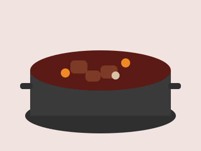

France
Europe
Le bœuf bourguignon
Plat mijoté de Bourgogne : du bœuf cuit longtemps dans du vin rouge avec des carottes, des oignons, des champignons et des lardons.
Ingrédients
- 1 kg de bœuf (paleron)
- 75 cl de vin rouge de Bourgogne
- 200 g de lardons
- 250 g de champignons
- 2 carottes, 2 oignons, 1 bouquet garni
Préparation
- Faire mariner la viande dans le vin une nuit.
- Faire dorer la viande et les lardons dans une cocotte.
- Ajouter les légumes, le vin et le bouquet garni.
- Laisser mijoter 3 heures à feu doux, ajouter les champignons 30 minutes avant la fin.